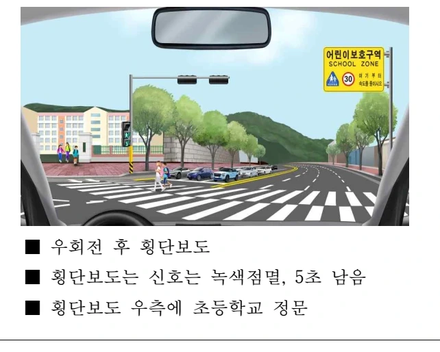

847. 다음 도로상황에서 가장 안전한 운전방법 2가지는?

- ①횡단보도에 있는 어린이와 충돌 가능성이 없으므로 우회전한다.
- ②갑작스레 튀어나올 수 있는 아이들의 행동에 대비한다.
- ③횡단보도 위 어린이가 횡단을 완료한 후 우회전한다.
- ④어린이의 횡단을 재촉하기 위해 경음기를 사용한다.
- ⑤횡단보도 위에 정지하여 다른 아이들의 진입을 막는다.
정답 보기
정답
② 갑작스레 튀어나올 수 있는 아이들의 행동에 대비한다.
③ 횡단보도 위 어린이가 횡단을 완료한 후 우회전한다.
근거·해설
횡단보도 보행신호가 거의 끝난 상태라도 보행자, 특히 어린이들은 방향을 바꿔 되돌아가는 경우가 있다. 또한 점 멸상태에서 무리하게 횡단하려는 보행자들이 있기 때문에 설령 차량신호가 녹색이라도 보행자의 유무를 확인한 후 진행하는 것이 안전하다. 교차로에서 우회전 후 횡단보도를 마주할 경우, 보행자가 있을 시에는 일시정지 후 보행자의 횡단이 끝난 뒤 통과하여야 한다(도로교통법 제27조).